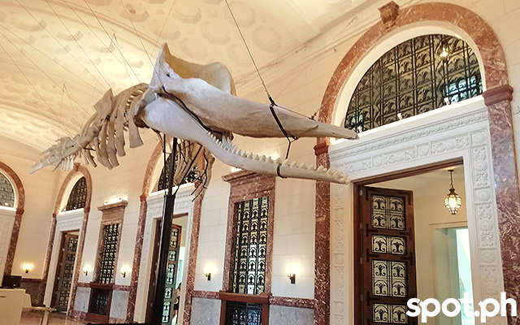

A natural history museum or museum of natural history is a scientific institution with natural history collections that include current and historical records of animals, plants, fungi, ecosystems, geology, paleontology, climatology, and more.
The National Museum of Natural History is a branch of the National Museum of the Philippines located in Manila. It is dedicated to the study and preservation of the Philippines' natural history and biodiversity. Here are some of the things that make the National Museum of Natural History special:
Collection: The museum has an extensive collection of specimens from the Philippines and other parts of the world. The collection includes a variety of natural history specimens such as plants, animals, fossils, rocks, and minerals.
Exhibits: The museum has a range of exhibits that showcase the natural diversity of the Philippines. These exhibits provide visitors with insights into the country's unique ecosystems and biodiversity.
Educational Programs: The museum offers educational programs that cater to students and the general public. These programs include guided tours, lectures, workshops, and interactive activities that promote environmental awareness and conservation.
Location: The museum is located within the Rizal Park Complex, a prime location in Manila that is easily accessible from other major tourist destinations.
Architecture: The building that houses the National Museum of Natural History is an architectural masterpiece that combines modern and neoclassical design elements. It is one of the most Instagram-worthy spots in Manila due to its beautiful interiors and exteriors.
Overall, the National Museum of Natural History is a must-visit destination for anyone interested in learning about the natural history and biodiversity of the Philippines. Its extensive collection, educational programs, and unique architecture make it a valuable resource for both locals and tourists.